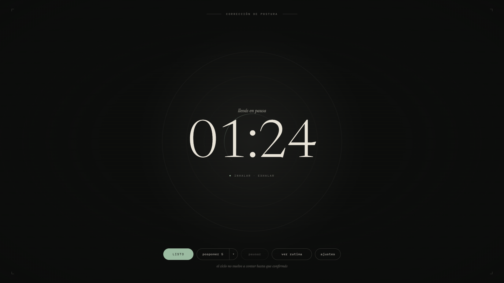
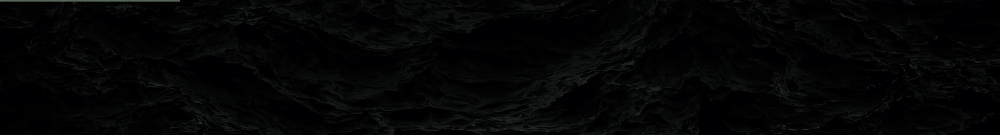
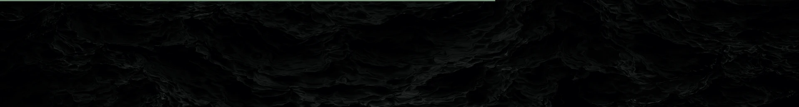
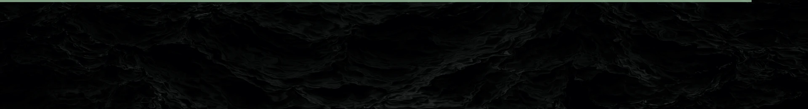
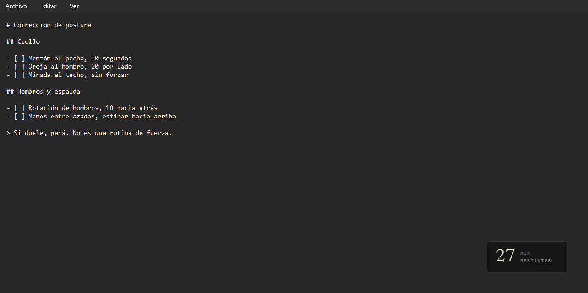
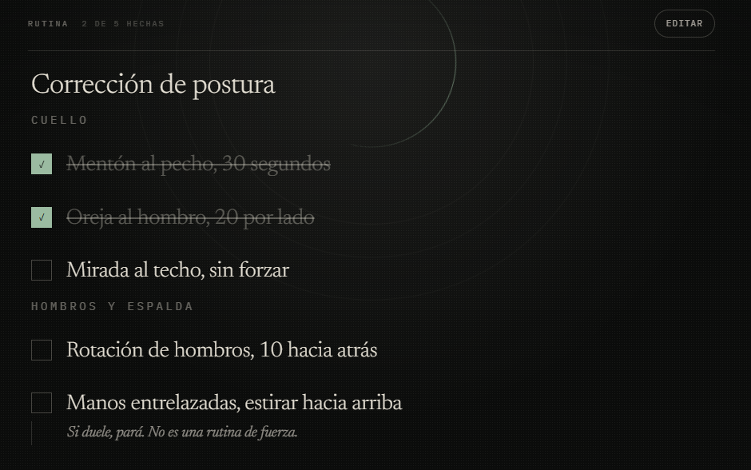
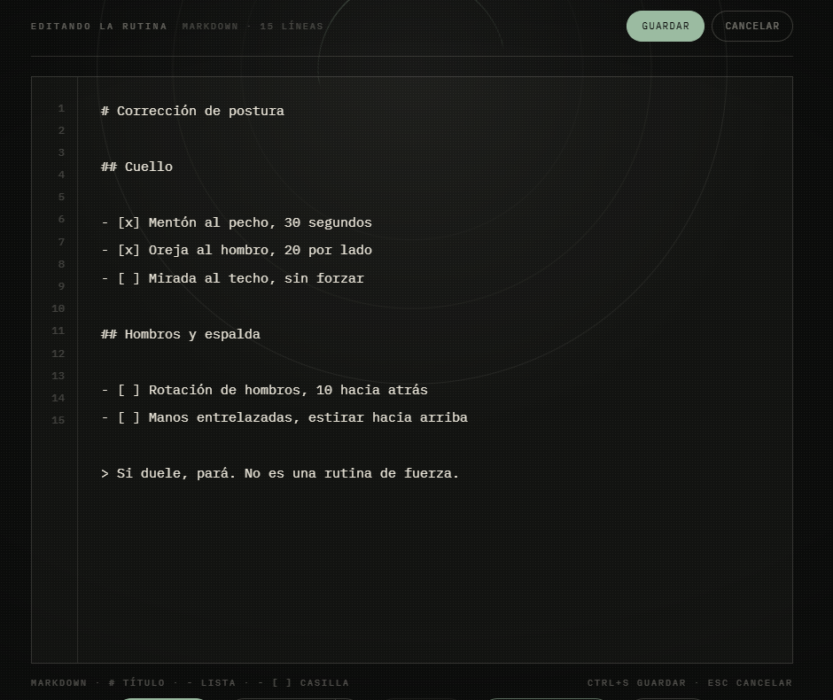

01
No te apura
El ciclo no vuelve a contar hasta que confirmás. Si la pausa dura diez minutos, dura diez minutos, y nada se pierde por eso.
TEMPORIZADOR DE PAUSAS · WINDOWS
Cairn te avisa cuándo parar y no vuelve a contar hasta que confirmás que terminaste. El resto del día es una barra de tres píxeles.

01 · TRES MODOS
El mismo ciclo se muestra de tres formas. Cambiás de modo cuando querés y el conteo sigue exactamente donde estaba.
AMBIENTE
Una barra pegada al borde superior de la pantalla que se llena a lo largo del ciclo. Sin ventana, sin texto, sin sonido. Cuando falta poco, engorda a cinco píxeles y respira.




WIDGET
Una ventana chica sin bordes, siempre encima, que arrastrás donde quieras. Muestra los minutos que faltan. Al pasar el mouse aparecen pausar y cambiar de modo, y nada más.
FOCO
Aparece cuando se cumple el intervalo, con un cronómetro que cuenta cuánto llevás en la pausa. Los halos respiran a cinco segundos y medio por ciclo: el mismo ritmo que una respiración lenta.
02 · EL CICLO
01
El intervalo corre en el modo que elijas. Ambiente por defecto.
02
Se cumple el intervalo y aparece Foco, con la rutina a un click.
03
El cronómetro cuenta hacia arriba. Dura lo que tenga que durar.
04
Apretás Listo. Recién ahí el intervalo vuelve a cero.
↩ SÓLO DESDE ACÁ VUELVE AL PRINCIPIO
03 · LA RUTINA
Markdown: títulos, listas, casillas. Cairn lo muestra grande y legible a distancia de brazo mientras te movés. Si ya te la sabés, el panel queda cerrado y apretás Listo.


01
El ciclo no vuelve a contar hasta que confirmás. Si la pausa dura diez minutos, dura diez minutos, y nada se pierde por eso.
02
Una barra de tres píxeles en el borde de la pantalla comunica todo el avance sin una sola palabra. Sin ícono que titile, sin sonido, sin globo de notificación.
03
Un markdown que editás vos y que vive en tu disco. Cairn no decide qué ejercicios hacés ni te vende un programa.
Sí, siempre. No hay cuenta ni servidor: todo pasa en tu máquina.
Sí. La rutina es un documento libre: ejercicios, tomar agua, mirar lejos, revisar una lista de pendientes.
Posponés cinco minutos con un click, o los minutos que quieras desde el mismo botón.
No todavía. Por ahora Cairn es sólo para Windows 10 y 11.
En un archivo markdown en tu carpeta de documentos. Podés abrirlo, editarlo o versionarlo con git.
Windows 10 y 11 · sin cuenta · sin conexión